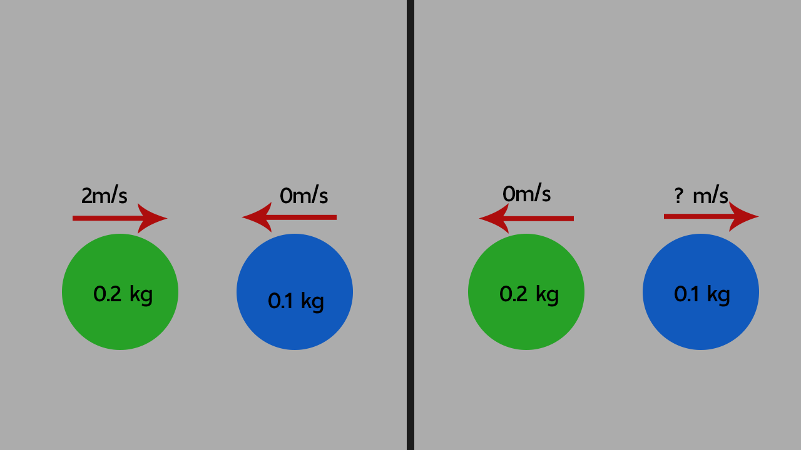

ตัวอย่างโจทย์พร้อมวิธีคิด การชนแบบยืดหยุ่น
ลูกบิลเลียดสองลุกน้ำหนักไม่เท่ากัน ลูกที่หนัก 0.2 kg วิ่งไปชนอีกลูกหนึ่งซึ่งหนัก 0.1 kg
เเละอยู่นิ่งด้วยความเร็ว 2 m/s ถ้าการชนเป็นแบบยืดหยุ่นและลูกแรกหยุดนิ่งกับที่หลังการชน
อยากทราบความเร็วหลังการชนลูกที่2

จะได้ว่า
m1 = 0.2 kg v1i = 2 m/s m2 = 0.1 kg v2i = 0 m/s(เพราะอยู่นิ่งอยู่กับที่)
m1 = 0.2 kg v1f = 0 m/s(เพราะชนเสร็จหยุดนิ่ง) m2 = 0.1 kg v2i = x m/s
เเทนค่าลงในสูตร
โมเมนตัมก่อนชน = โมเมนตัมหลังชน
m1v1i+m2v2i = m1v1f+m2v2f
(0.2)(2)+(0.1)(0) = (0.2)(0)+(0.1)(x)
0.4+0 = 0+0.1(x)
0.4⁄0.1 = x
x = 4
ดังนั้นความหลังการชนลูกที่ 2 จะเท่ากับ 4 m/s
การเคลื่อนที่แบบยืดหยุ่น
กลับไปหน้าเเรกคลิ๊กที่นี้
การเคลื่อนที่แบบไม่ยืดหยุ่น